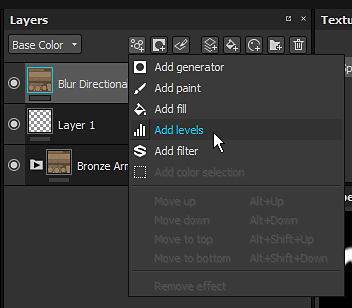
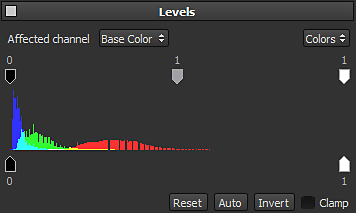

The level is an effect used to adjust the color ranges of an image. It allows to balance and tone colors and/or graycales values. You can add it by opening the effect menu :

The main interface display a histogram (the mountain of colors in the middle of the interface) which is the representation of how pixels are distributed in an image at each color intensity level. The histogram shows details in the shadows (left part), midtones (middle part) and the highlights (right part). The histogram also give a quick look at the tonal range of the colors, allowing to determine how dark or bright the image is.

To adjust the color range of the image, two sets of controls are available at the top and the bottom of the histogram :
The levels effect can only be applied to one Channel at a time, as selected by the Affected Channel option. If you want to apply a level on multiple channels, you'll have to create multiple Levels effects.